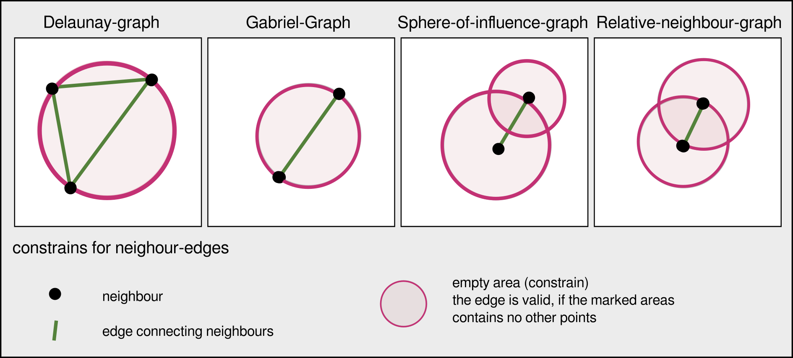
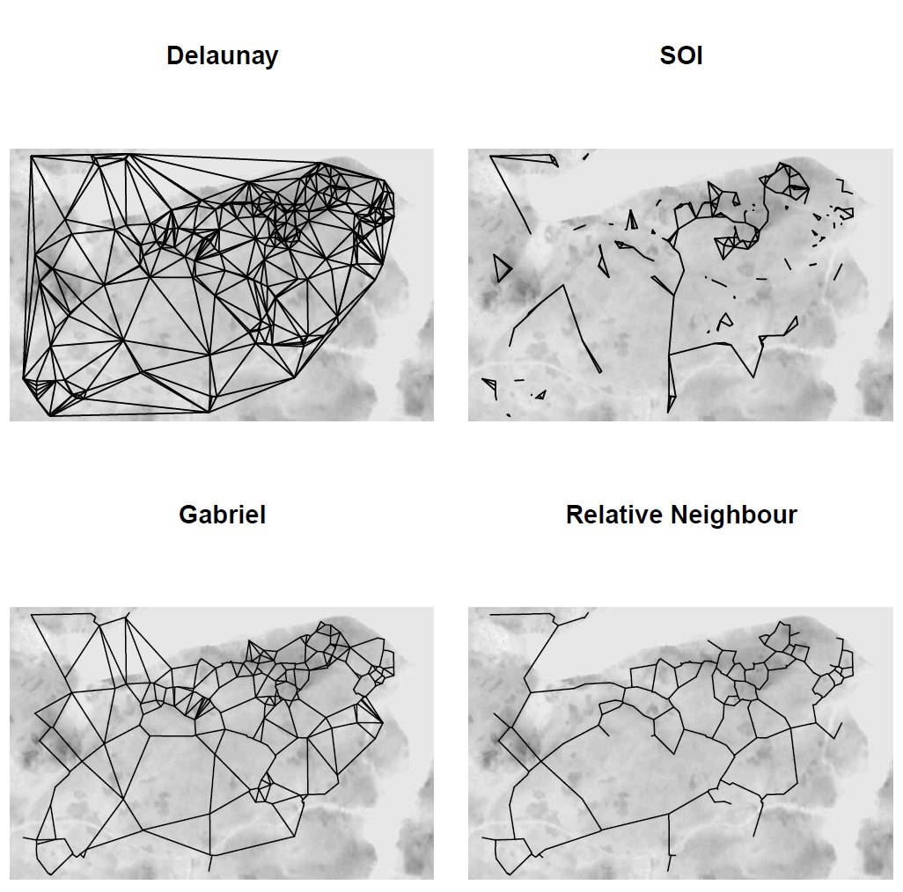
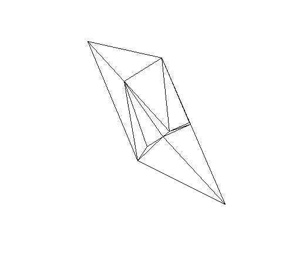
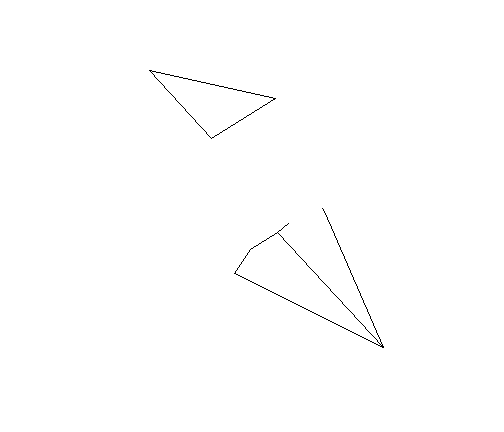
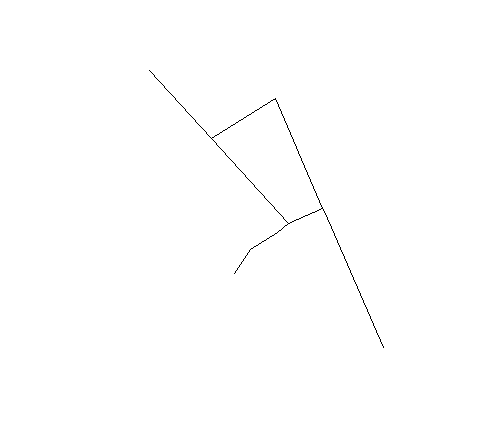
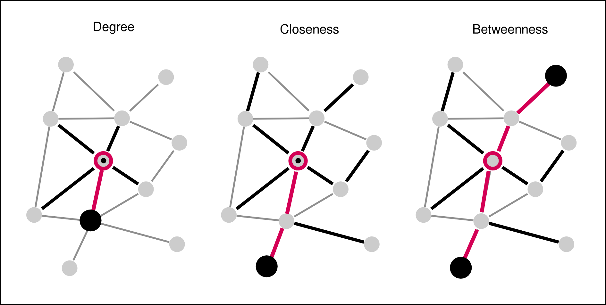
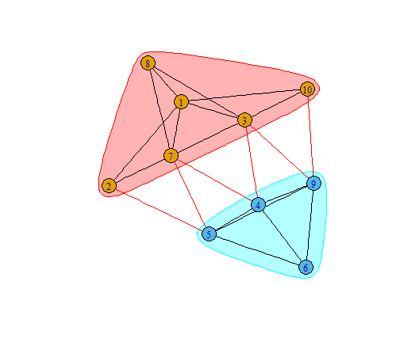
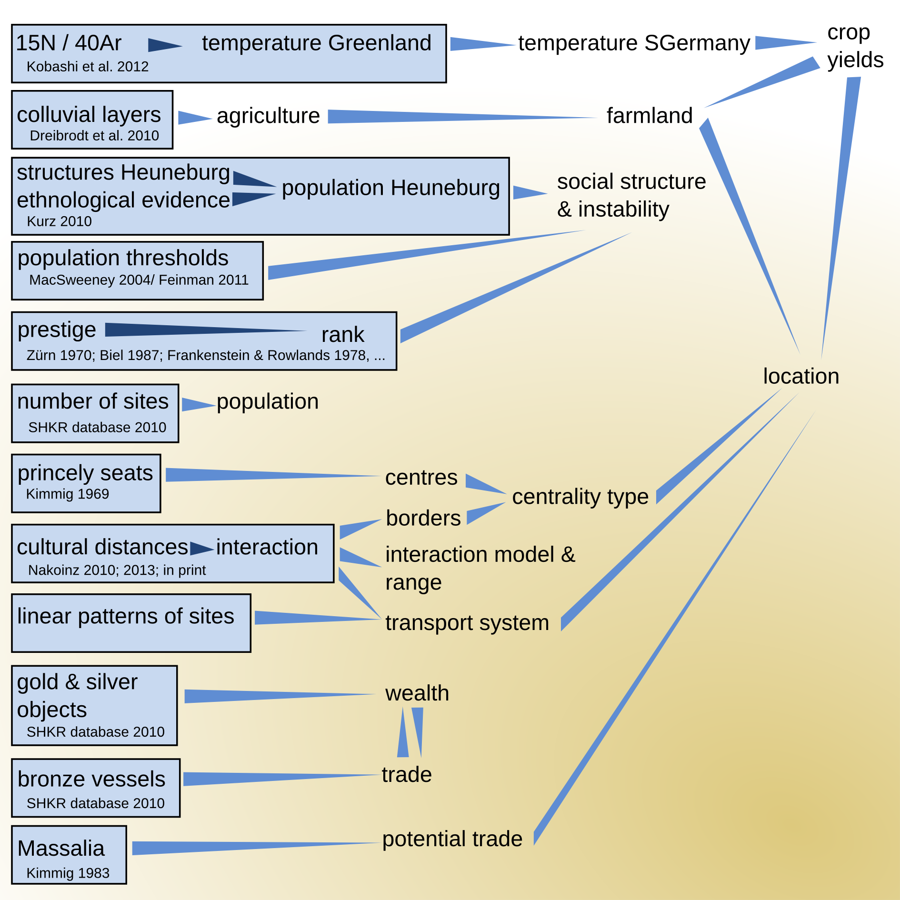
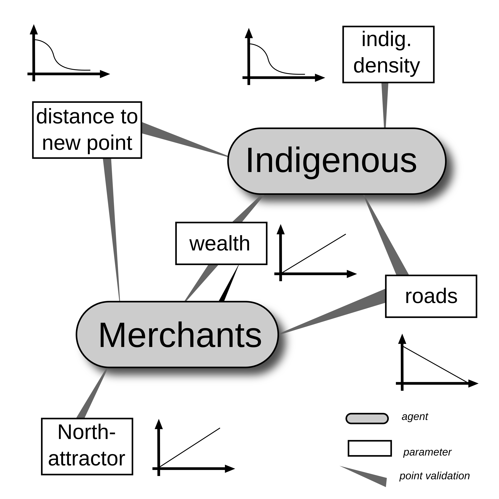

Modelling Spheres of Interaction
Network Approaches
Oliver Nakoinz, Daniel Knitter
MOSAIC Summer School 2016
Modelling Spheres of Interaction
Interacting partners
- individual interactions
- interaction in groups
- interaction between groups

Modelling Spheres of Interaction
Interacting systems
- Point Patterns
- Networks
- Systems

Point Patterns
Daniels Teil zu PointPatterns
Networks
Networks
Definition A networks are objects, in which elements (vertices) are connected by edges. Networks are models, mapping certain facets of the real world.
- Network theory has roots in geography and in social sciences
Networks
Network theory is based on graph theory

Do you know examples of networks?
Networks
- Rivers, Knappett, Evans
- Cyclades in Bronze Age
- fixed radius network

Networks
- Rivers, Knappett, Evans
- distance decay function

Networks
- Rivers, Knappett, Evans
- Cyclades in Bronze Age
- entropy model using double constrains

Networks | Graphs
- package igraph
- constructing graphs
## Error in plot(n1): cannot open file 'C:/Diss/R/develpoment/Mosaic01/Mosaic/10-Network_Analysis/.cache/unnamed-chunk-6_a06615d0fab008585b8490f9b1746abe.rdb': No such file or directory
library("igraph")
n1 <- graph( edges=c(1,5, 2,4, 1,3, 2,5,
3,5, 1,2, 3,4), n=6, directed=T )
plot(n1)
n1
## IGRAPH D--- 6 7 --
## + edges:
## [1] 1->5 2->4 1->3 2->5 3->5 1->2 3->4
E(n1)
## + 7/7 edges:
## [1] 1->5 2->4 1->3 2->5 3->5 1->2 3->4
V(n1)
## + 6/6 vertices:
## [1] 1 2 3 4 5 6
Networks | Graphs
- package igraph
- constructing graphs

get.adjacency(n1)
## 6 x 6 sparse Matrix of class "dgCMatrix"
##
## [1,] . 1 1 . 1 .
## [2,] . . . 1 1 .
## [3,] . . . 1 1 .
## [4,] . . . . . .
## [5,] . . . . . .
## [6,] . . . . . .
Networks | Graphs

n1 <- set_vertex_attr(n1, "label",
value =c("p1", "p2", "p3",
"Ppoint4", "Punkt 5", "6"))
plot(n1)
Networks | Graphs

n2 <- make_full_graph(22)
plot(n2)
Networks | Graphs

n3 <- make_tree(22, children = 3,
mode = "undirected")
plot(n3)
Networks
Delaunay graph
- Delaunay graph as example for graphs/spatial networks
- The Delaunay graph connects the natural neighbours

Networks | Delaunay graph
Construction rules for some neighbourhood graphs

Networks | Delaunay graph
The connections represent the liklyness of interaction

Networks
- packages
spdep - spatial graphs
library("spdep")
wd <- "/home/fon/daten/analyse/mosaic"
setwd(wd)
set.seed(1242)
co.weapons <- read.csv("2data/
shkr-weapons.csv", header=TRUE,
sep=";")[sample(1:220,10),1:2]
Networks | Delaunay graph

coords <- as.matrix(coordinates
(co.weapons))
ids <- row.names(as.data.frame
(co.weapons))
wts <- co.weapons[,1]; wts[] <- 1
fs_nb_del <- tri2nb(co.weapons,
row.names=ids)
del <- nb2lines(fs_nb_del,
wts=wts, coords=coords,
proj4string = CRS(as.character(crs1)))
plot(del)
Networks | SOI

library(RANN)
fs_nb_soi <- graph2nb(soi.graph(fs_nb_del,
coords), row.names=ids)
soi <- nb2lines(fs_nb_soi, wts=wts,
coords=coords, proj4string =
CRS(as.character(crs1)))
plot(soi)
Networks | Gabriel-Graph

fs_nb_gabriel <- graph2nb(gabrielneigh
(coords), row.names=ids)
gabriel <- nb2lines(fs_nb_gabriel,
wts=wts, coords=coords,
proj4string = CRS(as.character(crs1)))
plot(gabriel)
Networks | Relative-Neighbour-Graph

fs_nb_relative <- graph2nb(
relativeneigh(coords),
row.names=ids)
relative <- nb2lines(fs_nb_relative,
wts=wts, coords=coords,
proj4string = CRS(as.character(crs1)))
plot(relative)
Networks | Delaunay graph
- transforming
spdep-graphtoigraph-graph

n4nb <- nb2mat(fs_nb_del,
style="B", zero.policy=TRUE)
n4 <- graph.adjacency(n4nb,
mode="undirected")
plot(n4)
What do spatial graphs tell about interaction?
Networks | Centrality
Centrality maps the structural importance of a node/edge in a network.

Networks | Centrality
degree(n4)
## [1] 5 3 6 5 5 3 6 3 5 3
closeness(n4)
## [1] 0.07142857 0.06666667 0.08333333 0.07692308 0.07692308 0.05882353
## [7] 0.08333333 0.06250000 0.07692308 0.06666667
betweenness(n4)
## [1] 3.0000000 0.6666667 5.1666667 2.5000000 3.9166667 0.0000000 5.1666667
## [8] 0.0000000 3.9166667 0.6666667
edge_betweenness(n4)
## [1] 3.666667 2.833333 2.833333 2.000000 3.666667 4.166667 2.500000
## [8] 3.750000 2.666667 3.500000 4.083333 2.500000 1.833333 2.833333
## [15] 3.750000 1.833333 3.083333 4.083333 3.666667 3.083333 3.500000
## [22] 4.166667
Networks | Plotting Centrality
- transforming
spdep-graphtoigraph-graph

ceb <- cluster_edge_
betweenness(n4)
dendPlot(ceb, mode="hclust")
Networks | Plotting Centrality
- transforming
spdep-graphtoigraph-graph

plot(ceb, n4)
What does centrality tell about interaction?
Systems
Systems | Agent Based Modelling
AMB comprises
- an actors
- an envirionment and
- a process

Systems | Agent Based Modelling
Example Heuneburg
- indigenous people
- merchants

Systems | Agent Based Modelling
Reasoning for certain relationships

Systems | Agent Based Modelling
The process
Actors can:
- move
- trade
- accumulate wealth

Systems | Agent Based Modelling
Some results

Systems | Agent Based Modelling
But is it useful?
Whad do you think?